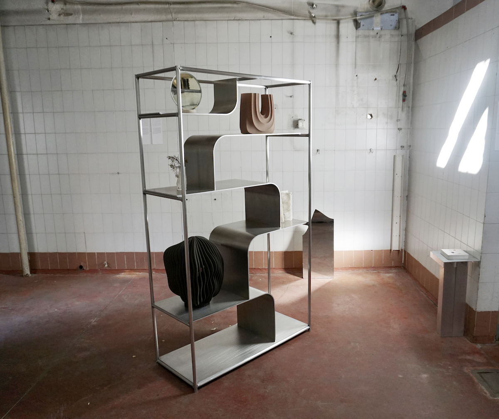
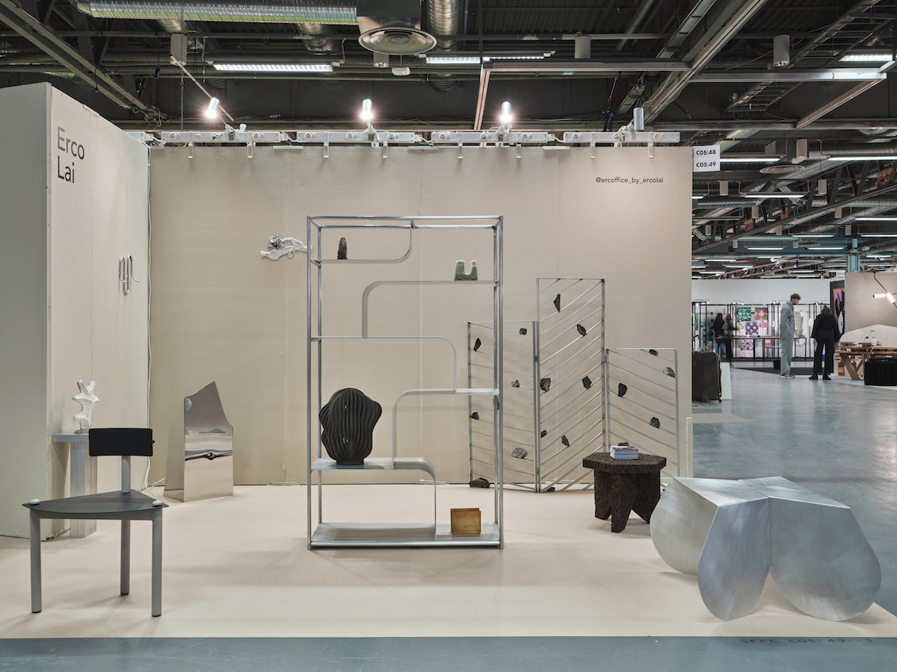

Steel / Aluminum
H.172 x W.100 x D.40cm
Waterfall
2018
2021 Feeel Design Award - longlisted
Concept
Modern Asian style
With inspiration from the traditional Asian wooden shelf, this design was originally intended for showcasing merchandise objects. Now, Erco Lai tried to reform it with modern materials and to seamlessly integrating into any contemporary living scenario. It is a timeless piece that has been reimagined to provide both practicality and style. Whether used as a bookshelf, a display unit, or simply to store items, this shelf is sure to bring a touch of sophistication and elegance to modern home.


Process
Sheet metal bending
To create the form of water flowing, the platforms are made of metal sheets with huge radius bending. The wireframe system is designed to give a strong structural framework and borders, while the powder coating helps to make sure the shelf is more durable and has an anti-slip surface, thus creating a safer environment. By combining the metal sheets with the wireframe system and the powder coating, the platforms will be able to hold up to the elements, making them suitable for a variety of different uses.


Special Edition
Aluminum
Introducing a special edition collection that seamlessly blends sleek aluminum craftsmanship with enduring durability. Inspired by various landscapes, these pieces emulate the flowing water forms through meticulously sculpted aluminum sheets, reinforced by a strong wireframe system. Designed by Erco Lai, this collection showcases imaginative and creative prowess, presenting an innovative "second nature" while harmonizing Eastern aesthetic forms with Western material rationality.
2023 ALCOVA
Duplicating Landscape, Milan
2024 Greehouse
Stockholm Furniture fair, Sweden
2024 Because of JoaN
The Nature of something, Amsterdam


Further reading
Stimuleringsfonds NL
- Looking back at the Salone del Mobile 2023
Sight Unseen
- New Talents We Scouted at Greenhouse, Stockholm’s Showcase 2024
Dropbox
- For more Hi-Res photos